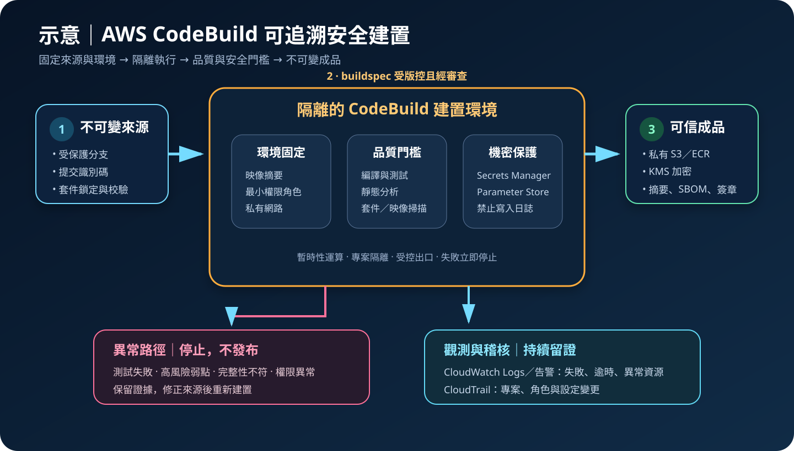

AWS CodeBuild：受管建置與安全供應鏈
AWS CodeBuild 在暫時性的受管環境中編譯原始碼、執行測試並產生成品，省去自行維護建置伺服器。它提供可擴展的執行能力，但不會自動保證來源、相依套件、建置指令或輸出成品可信。
作者：Dr. William｜查閱與發布：2026-09-18
服務定位
AWS CodeBuild 是全受管持續整合服務。每次建置會取得指定來源，在選定的運算類型與映像中執行命令，串流日誌，最後輸出測試報告、容器映像或其他成品。容量可隨並行建置需求擴展，不必長期管理固定的建置主機。
CodeBuild 是建置執行環境，不是原始碼治理、套件信任、弱點修補、部署核准或正式環境回復工具。建置顯示成功，只表示既定命令以成功狀態結束；若沒有加入測試、掃描、成分清單、簽章與政策門檻，成功成品仍可能包含缺陷或供應鏈風險。
核心概念與適用邊界
主要元件
- 建置專案：定義來源、環境、服務角色、buildspec、成品、快取、日誌、逾時與網路設定。
- 建置環境：由受管映像、自訂映像、運算類型、作業系統與環境變數組成；每次建置應視為可丟棄工作單元。
- buildspec：以 YAML 描述 install、pre_build、build、post_build 階段、命令、成品與報告；可存於來源庫或由專案指定。
- 來源與 webhook：可從 CodeCommit、S3、GitHub、Bitbucket 等支援來源取得修訂，也可由 CodePipeline 或事件啟動。
- 成品、報告與快取：建置輸出可送至 S3 或下游服務；測試報告集中呈現結果，快取則縮短重複下載時間。
- 批次與保留容量：批次建置可平行處理工作；依工作負載可使用隨需容量或支援的保留容量選項。
邊界與依賴
- 受管映像仍需選定版本並持續更新；自訂映像的套件、修補與惡意內容由客戶治理。
- 連接 VPC 後，建置容器的網路可達性取決於子網路、路由、安全群組、端點與 NAT 設計。
- 本機或 S3 快取可提升速度，但會增加陳舊、污染或跨建置帶入不可信內容的風險。
- 特權模式可支援特定容器建置方式，也擴大容器與執行環境的攻擊面，不應預設開啟。
- CodeBuild 可產生與推送成品，是否允許進入正式部署仍應由獨立政策、核准及健康驗證決定。
適合與不適合的使用情境
適合
- 需要以一致環境自動執行編譯、單元測試、靜態分析、相依套件掃描與封裝。
- 建置量具有尖峰或多分支並行需求，不希望維護閒置的固定建置伺服器。
- 需要將建置整合 CodePipeline、ECR、S3、CloudWatch、KMS 與 IAM，並留下可稽核紀錄。
- 需要隔離不同團隊、儲存庫、帳號或敏感等級的建置角色與網路路徑。
不適合或不能單獨完成
- 工作需要永久保存本機狀態、特殊實體硬體或無法在支援環境中執行，需評估其他執行平台。
- 超長時間、互動式或資料處理型工作不符合建置生命週期，應評估 Batch、ECS、Step Functions 等服務。
- 完全依賴未固定版本的外部套件與公開網路，卻沒有代理、鏡像、校驗或軟體成分清單時，不宜直接作為可信發布來源。
- 需要完整持續交付編排、人工核准與流量切換時，仍需 CodePipeline 或其他部署服務配合。
示意故事案例：會員平台的可重複安全建置
以下為示意案例，不代表特定組織或正式部署。 一個會員平台在受保護分支收到合併後，由 CodePipeline 將不可變來源修訂交給 CodeBuild。專案使用固定摘要的建置映像與獨立服務角色，先驗證套件鎖定檔及來源完整性，再執行單元測試、靜態分析、開源套件與容器映像掃描。任何高風險項目或測試失敗都會讓建置停止。
建置容器位於私有子網路，只能透過 VPC 端點或受控出口存取必要服務。執行期機密由 Secrets Manager 或 Parameter Store 取得，不寫入來源、環境變數明文、快取、成品或日誌。通過門檻後，系統產生軟體成分清單並簽署容器映像，將成品送至加密的 ECR 或 S3；CloudTrail、CloudWatch Logs 與告警保留建置及權限異常證據。

建置與運作流程
- 定義信任範圍：確認來源儲存庫、分支、建置觸發者、輸出成品、資料分類、擁有者與失敗門檻。
- 固定來源與相依版本：依提交識別碼建置，使用鎖定檔、可信套件來源、雜湊驗證及可重建版本，避免無界線抓取最新版。
- 選擇建置映像：優先使用受支援映像並固定可驗證版本；自訂映像放入私有儲存庫，定期掃描、修補與淘汰。
- 拆分最小權限角色：每類專案使用專用服務角色，只能讀取指定來源、解密必要值、寫入指定日誌與成品位置。
- 建立網路邊界：敏感建置放入私有子網路，限制安全群組與出站流量，透過 VPC 端點存取 S3、ECR、CloudWatch 等必要服務。
- 撰寫 buildspec：分階段執行環境檢查、編譯、測試、掃描、成分清單與封裝；對失敗使用明確非零狀態，避免忽略錯誤。
- 安全提供機密：使用 Secrets Manager 或 Parameter Store 安全字串，在執行期授權存取；禁止列印、匯出或包入成品。
- 保護成品與快取：S3、ECR 及快取採私有存取與 KMS 加密；限制寫入者，驗證摘要或簽章並設定保存期限。
- 建立可觀測性：將建置日誌送至 CloudWatch Logs，保存 CloudTrail 控制面事件，對失敗率、異常時間、權限與設定變更告警。
- 驗證復原與替代路徑：測試重新建置歷史版本、重建專案設定、從備份還原必要設定，以及區域故障時的建置與發布程序。
成本、可用性與維運考量
CodeBuild 成本主要依運算類型、建置時間與容量模式計算；S3、ECR、CloudWatch Logs、KMS、NAT Gateway、資料傳輸、測試資源與安全掃描工具另行計費。快取與較大運算資源可能縮短建置時間，但不一定降低總成本。應以實際排隊時間、執行時間、成功率及帳務資料調整平行度、逾時與保留策略，並依官方價格頁確認當前區域費率。
建置專案與多數設定具有區域性。增加並行額度可以降低排隊，但不能取代服務配額、來源服務、套件來源、VPC 出口、成品儲存庫與 KMS 的可用性設計。重要發布應保存可重建的建置定義與映像，並評估替代區域、必要配額及跨區成品策略。
可重複建置比單次成功更重要。若相依套件會漂移、映像標籤可被覆寫或外部來源無法使用，同一修訂可能產生不同輸出。應固定版本、保存成分清單與摘要、限制成品覆寫，並定期用歷史修訂驗證重建能力。
CodeBuild 特有資安風險與控制
- 不可信 buildspec 執行任意命令：保護分支與審查規則，限制可觸發正式專案的人員；外部拉取請求使用無敏感權限的隔離專案。
- 服務角色權限過大：按專案拆分角色，限制資源 ARN、KMS 解密、ECR 推送與 S3 寫入範圍，避免萬用權限及不受限的 iam:PassRole。
- 機密經環境或日誌外洩：使用 Secrets Manager／Parameter Store 動態取得，避免明文環境變數；關閉命令追蹤或遮罩敏感輸出，掃描日誌與成品。
- 相依套件與基底映像遭污染：固定版本與摘要，使用受控鏡像、來源允許清單、完整性校驗、成分清單、弱點掃描及簽章驗證。
- 快取投毒或跨建置殘留：依信任層級分開快取命名空間，不把機密放入快取；高風險建置停用共享快取並驗證下載內容。
- 特權模式擴大攻擊面：只在確有需求時啟用，隔離專案與帳號，限制來源、網路及角色；優先評估不需特權的容器建置方式。
- VPC 接入造成橫向移動：使用專用私有子網路與最小安全群組，避免連到生產資料庫；以端點政策、DNS 與出口控制限制目的地。
- 公開 webhook 或分支過濾錯誤：驗證事件來源，設定精確分支與檔案過濾，監看觸發量；外部貢獻不得取得正式環境機密。
- 成品被覆寫或混淆：以不可變版本、摘要、簽章及獨立成品位置識別輸出，S3 禁止公開存取並限制 ECR 標籤覆寫。
- 偵測與復原不足：CloudTrail 保存專案與角色變更，CloudWatch 監看失敗、逾時與異常資源消耗；備份建置定義、私有映像與必要成品，演練跨區重建。
共同責任邊界
AWS 負責 CodeBuild 受管服務及底層雲端基礎設施的安全與維運，並提供隔離的建置運算、受管映像選項、服務整合及日誌能力。客戶負責來源與 buildspec 的可信度、映像及套件選擇、服務角色、網路、機密、測試門檻、成品完整性、資料保存與復原程序。
客戶仍須落實 IAM 最小權限、人員 MFA 與短期憑證、帳號及網路隔離、S3／ECR 公開存取控制、KMS 加密、Secrets Manager／Parameter Store 機密管理、CloudTrail／CloudWatch 觀測，以及必要設定與成品的備份及跨區復原。AWS 不會替客戶審查建置腳本、判斷套件是否可信，或保證輸出符合組織政策與法規。
上線前可執行檢查清單
- □ 來源分支受保護，提交、觸發事件與建置來源修訂可追溯且不可混淆。
- □ 建置服務角色符合 IAM 最小權限，KMS 解密、成品寫入與可傳遞角色均受限。
- □ 管理人員使用聯合登入、MFA 與短期憑證，沒有日常使用的長期存取金鑰。
- □ 建置映像與相依套件固定版本或摘要，來源經允許清單、校驗、掃描與成分清單管理。
- □ 敏感建置位於隔離帳號或私有子網路，安全群組、VPC 端點及出站目的地符合最小需求。
- □ 特權模式預設關閉；若必要，已有獨立專案、來源限制、風險核准與監控。
- □ 機密由 Secrets Manager 或 Parameter Store 提供，來源、明文環境變數、日誌、快取及成品均不含敏感值。
- □ S3 與 ECR 禁止公開存取，成品與快取採 KMS 加密、私有政策、完整性驗證及保存期限。
- □ 測試、靜態分析、套件與映像掃描具有明確失敗門檻，無法以忽略錯誤方式繞過。
- □ CloudTrail 集中保存控制面事件；CloudWatch Logs 與告警涵蓋失敗、逾時、設定變更與異常資源消耗。
- □ 成品使用不可變識別、摘要或簽章，下游部署只接受通過政策門檻的指定輸出。
- □ 歷史版本可重建；建置設定、私有映像與必要成品有備份，跨區替代程序及 RTO／RPO 已演練。
- □ 已依建置分鐘、運算類型、並行度、快取、日誌、KMS、NAT、儲存與資料傳輸估算並監看成本。
AWS 官方一手來源
- AWS CodeBuild User Guide｜What is AWS CodeBuild?（查閱：2026-09-18）
- Build environment reference（查閱：2026-09-18）
- Build specification reference（查閱：2026-09-18）
- Identity and access management for CodeBuild（查閱：2026-09-18）
- Security best practices for CodeBuild（查閱：2026-09-18）
- Data protection and encryption in CodeBuild（查閱：2026-09-18）
- Use AWS CodeBuild with Amazon VPC（查閱：2026-09-18）
- AWS CodeBuild pricing（查閱：2026-09-18）
- AWS Well-Architected Security Pillar｜Shared responsibility（查閱：2026-09-18）
內容說明
本文依查閱日可用的 AWS 官方文件整理，作為基礎學習與架構討論材料；實際部署仍須依最新功能、區域支援、價格、配額、組織政策、資料分類、法規及復原演練結果調整。